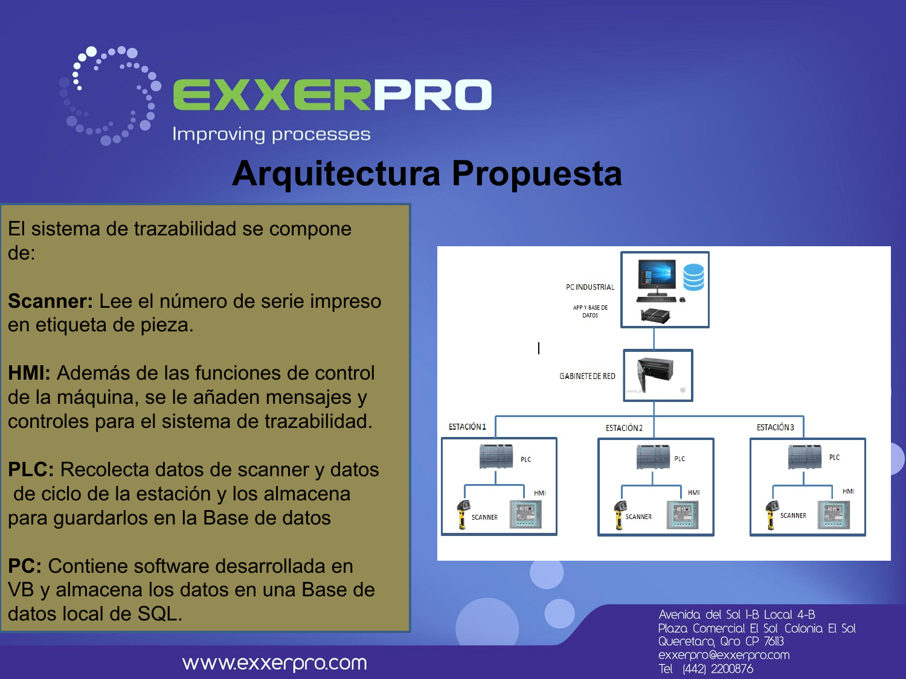

15+ years leading engineering, automation and digital-transformation projects across automotive, manufacturing and logistics — from PLC and motion control on the plant floor to AI-driven analytics in the cloud.
A career built on one recurring pattern: understanding a physical system well enough to instrument it, control it, automate it — and eventually turn its data into a business decision.
I'm an industrial engineering and technology leader with more than two decades of experience solving complex manufacturing and industrial problems through automation, control engineering, optimization, software and artificial intelligence.
My work spans automotive, manufacturing, logistics and industrial automation environments — combining hands-on PLC and motion-control engineering with project leadership, technology strategy and business development. As director of Exxerpro Solutions, I led engineering teams delivering automation, controls, traceability and industrial software projects for automotive OEMs and Tier-1 suppliers, logistics integrators, and industrial equipment manufacturers.
That technical foundation — instrumentation, PLCs, motion control, industrial networks — has since extended into optimization, software engineering, applied AI and Industry 4.0/5.0. Same systems-thinking approach; a wider stack.
Six dimensions that rarely show up together in one profile — and the reason I can move a project from plant-floor wiring to a management dashboard without handing it off.
PLC programming and architecture across Siemens (S7-200/1200/1500) and Allen-Bradley (PLC5, ControlLogix), HMI/SCADA, safety I/O and industrial networking.
Servo and drive systems (PowerFlex 755, Kinetix 6500), multi-axis torque and motion control, drive migrations on live production lines.
Part-level traceability systems, OEE reporting, barcode/vision integration (Cognex), and data pipelines from PLC to database to management report.
Mathematical optimization, simulation and evolutionary algorithms applied to real production and process-design problems — the academic complement to the plant-floor work.
Data-acquisition applications (VB, SQL Server), reporting systems, and the analytics dashboards that turn years of operational data into decisions.
Predictive analytics and cloud monitoring for industrial processes — most recently an AI-driven monitoring system for wastewater treatment plants.
Fixture and tooling design, mechanical/electrical installation, and full machine-build projects — automation that extends into physical engineering.
15+ years running an engineering business: client development, project delivery, and teams across dozens of simultaneous industrial accounts.
A sample of delivered industrial automation, traceability and digitalization projects — real clients, real production lines.

Part-level traceability across two 20-station lines — Siemens PLCs, barcode scanning, and a custom VB/SQL Server data-acquisition app.
Migrated a truck-steering torque test rig from PLC5/1394 to ControlLogix/Kinetix 6500, with a full logic rewrite and 4-day commissioning.
Sensor, AI and cloud-based monitoring system for PTAR operations — predictive analytics, remote dashboards, quantified efficiency gains.
Signed recommendation letters from engineering and purchasing managers at companies Exxerpro worked with directly. Originally written in Spanish; translated below.
We highly recommend Exxerpro Solutions S.A. de C.V., which has developed engineering and automation projects for our company, along with fault-recovery support, consulting, and preventive/corrective maintenance — with quality and excellence.
Exxerpro Solutions consistently delivers projects for our company on time, on budget and to specification, with an excellent service attitude, responsibility and excellence.
Exxerpro has developed projects for our company on time and to specification, supporting the correction and elimination of faults across different control platforms — with an excellent work attitude, strong responsibility, and adherence to our safety guidelines.
We highly recommend Exxerpro Solutions S.A. de C.V., represented by M. en C. Abel Briones Ramírez, who has provided engineering and automation services to our company.
Open to senior engineering, automation, digital-transformation and AI leadership roles.